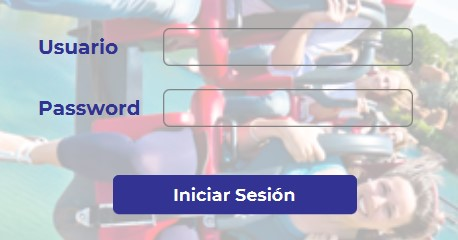

TEAM TIME es una aplicación para la gestión de horarios de empleados, que te permitirá optimizar el tiempo en la organización de los horarios de tu equipo en Port Aventura.
Con TEAM TIME podrás crear horarios, asignarlos a los empleados, visualizar los datos de los empleados y los horarios asignados. Además, la aplicación es muy fácil de usar, por lo que podrás comenzar a usarla rápidamente.
Para empezar a utilizar TEAM TIME, deberás iniciar sesión con tu usuario y contraseña. Para poder acceder como administrador, el Usuario es "Administrador" y el Password también es "Administrador". Una vez que hayas iniciado sesión, podrás acceder a todas las funcionalidades de la aplicación.
En la pantalla "Crear", podrás crear horarios para cada zona de trabajo del parque, desde las zonas de restauración hasta las atracciones. Solo deberás indicar el nombre de la zona y crear un nuevo horario.
En la pantalla "Asignar", podrás asociar uno de estos horarios creados a uno o varios empleados de Port Aventura, recuerda que deberían formar parte de tu equipo y que no pueden realizar varios horarios en el mismo periodo de tiempo. También podrás borrar un horario si anteriormente lo has creado incorrectamente.
En la pantalla "Visualizar", podrás visualizar todos los horarios de una zona en concreto dentro de un periodo de tiempo que tú selecciones. En ella podrás visualizar los horarios y los nombres de todos los empleados que estén asignados a ese turno u horario.
En la pantalla"Empleado", podrás visualizar todos los datos de un empleado buscado por su nombre, y también una lista de sus horarios para poder informarle de forma más visual y detallada.
En la pantalla"Datos", podrás dar de alta, modificar o dar de baja a tus empleados, a las atracciones y los restaurantes del parque.
En el menú "Conclusión", podrás consultar toda la documentación del proyecto de la aplicación. Allí encontrarás los pasos seguidos para crear esta aplicación y las resoluciones de los problemas que se han presentado durante el desarrollo de la misma.
Con TEAM TIME podrás gestionar los horarios de los empleados de Port Aventura de una manera más eficiente y organizada. ¡Ahorra tiempo y simplifica tu trabajo!
Gracias por usar TEAM TIME. Esperamos que esta aplicación te resulte útil para tu trabajo.